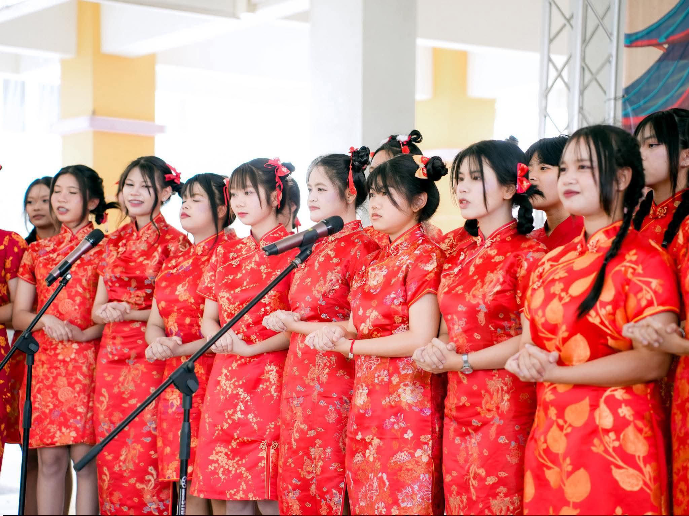
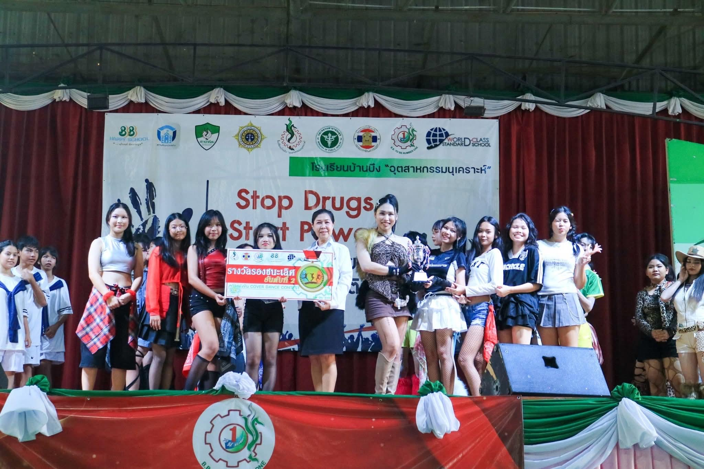
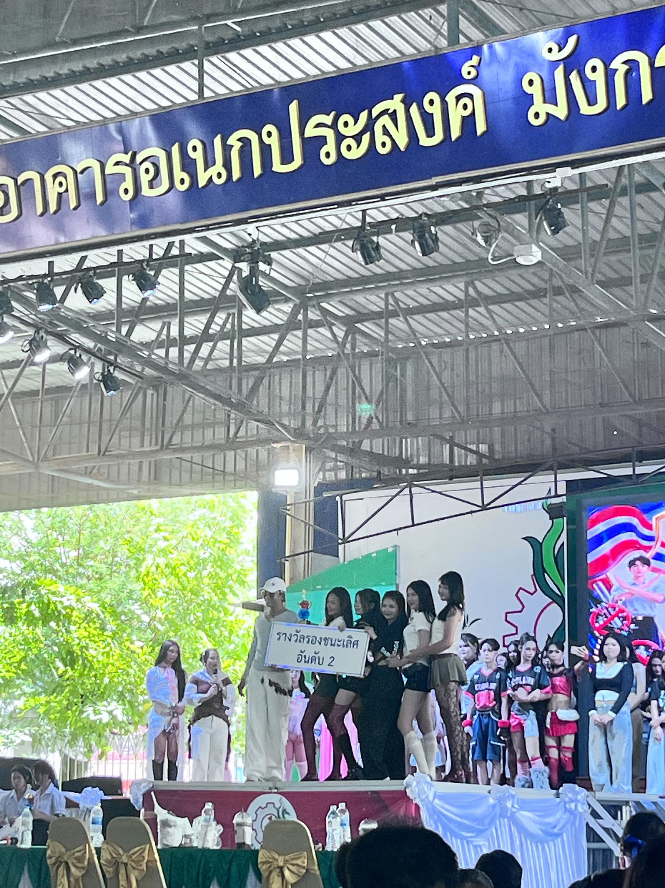
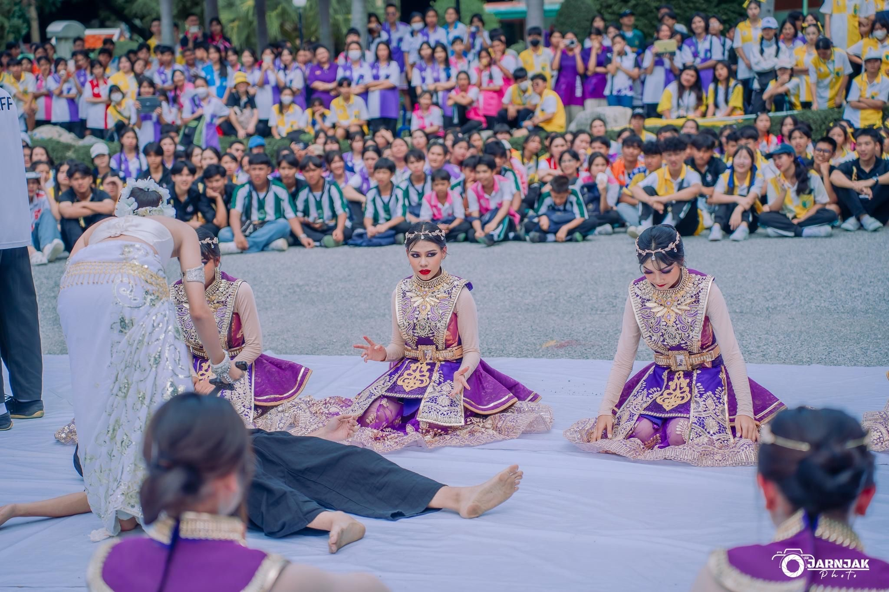

🎞️ ผลงานและกิจกรรม (My Portfolio)
รวบรวมประสบการณ์ ประธาน/ผู้นำกิจกรรม และผลงานสร้างสรรค์ 🍿✨

ร้องเพลงประสานเสียงเนื่องในวันตรุษจีนปีการศึกษา2568
ได้รับเลือกให้เป็นผู้นำร้องเพลงประสานเสียงภาษาจีน เนื่องในกิจกรรมวันตรุษจีนของโรงเรียนบ้านบึงอุตสาหกรรมนุเคราะห์ การทำหน้าที่นี้ช่วยพัฒนาทักษะการคุมเสียง การสื่อสารอารมณ์ และความกล้าแสดงออกต่อหน้าสาธารณชน ซึ่งเป็นพื้นฐานสำคัญอย่างยิ่งต่อการเรียนด้านการสื่อสาร ไม่ว่าจะเป็นงานพิธีกร การพูดสื่อสารในที่สาธารณะ งานแสดง ตลอดจนการเปิดรับทักษะด้านการสื่อสารข้ามวัฒนธรรม ที่จำเป็นต่อการสร้างสรรค์สื่อในยุคปัจจุบัน

Cover Dance Contest เนื่องในวันต้านยาเสพติดปีการศึกษา2568
เข้าร่วมการแข่งขันเต้นโคฟเวอร์แดนซ์ต่อต้านยาเสพติดของโรงเรียนบ้านบึงอุตสาหกรรมนุเคราะห์ และได้รับรางวัลรองชนะเลิศอันดับที่2 การเข้าร่วมกิจกรรมนี้ช่วยพัฒนาทักษะการสื่อสารสารประโยชน์สู่สาธารณะผ่านการแสดง การเล่าเรื่องและสร้างความประทับใจทางสายตา ตลอดจนการฝึกระเบียบวินัยและการทำงานร่วมกับทีม ซึ่งสามารถนำไปต่อยอดกับการวางแผนแคมเปญประชาสัมพันธ์และการสร้างสรรค์สื่อเพื่อสังคมในสายงานนิเทศศาสตร์ได้เป็นอย่างดี

BBU Dance Contest 2569
เข้าร่วมแข่งขันเต้นBBU Dance Contest ในวันต้านยาเสพติดปีการศึกษา2569 ได้รับรางวัลรองชนะเลิศอันดับที่ 2 โดยรับหน้าที่คิดค้นท่าเต้นและเป็นผู้สอนท่าเต้นให้กับเพื่อนๆในทีม ประสบการณ์นี้ช่วยพัฒนาทักษะความคิดสร้างสรรค์ อีกทั้งยังได้ฝึกการบริหารจัดการทีมและการสื่อสารเพื่อถ่ายทอดไอเดียให้ผู้อื่นเข้าใจอย่างชัดเจน ซึ่งตรงกับองค์ความรู้ในสายงานกำกับการแสดง งานโปรดักชัน และการบริหารสื่อสารมวลชน

ผู้นำเชียร์คณะสีม่วง ปีการศึกษา2567
ได้รับเลือกให้ทำหน้าที่ผู้นำเชียร์ของคณะสีม่วง ในงานกีฬาสีประจำปี2567 และคว้ารางวัลรองชนะเลิศอันดับที่1 กิจกรรมนี้ช่วยเจียระไนบุคลิกภาพ การวางท่าทาง และการส่งต่อพลังงานอารมณ์ไปยังผู้ชมจำนวนมาก อีกทั้งยังได้ฝึกการบริหารเวลาและการประสานงานในองค์กรขนาดใหญ่ ถือเป็นคุณสมบัติสำคัญของผู้ทำงานด้านสื่อสารมวลชน

5. ผู้นำเชียร์ คณะสีม่วง งานกีฬาสี (ปี 2568)
ปฏิบัติหน้าที่ผู้นำเชียร์คณะสีม่วงต่อเนื่องเป็นปีที่ 2 ในงานกีฬาสีประจำปี 2568 และได้รับรางวัลรองชนะเลิศอันดับที่ 1 กิจกรรมนี้ช่วยยกระดับทักษะความเป็นผู้นำ การเป็นพี่เลี้ยงคอยโค้ชและถ่ายทอดประสบการณ์ให้รุ่นน้อง (Mentorship) ตลอดจนทักษะการแก้ปัญหาเฉพาะหน้าในการจัดโชว์ ซึ่งทักษะการบริหารคน การคุมมาตรฐานงานโปรดักชัน และความยืดหยุ่นถือเป็นหัวใจสำคัญในการทำงานสายสื่อและเบื้องหลังงานผลิตสื่อทุกรูปแบบ

6. Open House คณะวารสารศาสตร์ฯ ม.ธรรมศาสตร์
เข้าร่วมกิจกรรม Open House คณะวารสารศาสตร์และสื่อสารมวลชน มหาวิทยาลัยธรรมศาสตร์ ได้เข้าทำเวิร์กชอปทดลองปฏิบัติงานจริงในแต่ละสาขาวิชา กิจกรรมนี้ช่วยเปิดโลกทัศน์ให้เห็นภาพรวมของกระบวนการทำงานจริงในสายงานสื่อสารมวลชน ทั้งด้านภาพยนตร์ วารสารศาสตร์ และดิจิทัลมีเดีย ช่วยตอกย้ำความมุ่งมั่น แรงบันดาลใจ และความพร้อมในการเข้าศึกษาต่อในสายวิชานิเทศศาสตร์อย่างชัดเจนที่สุด